NCERT इतिहास (कक्षा 10) - अध्याय 1
यूरोप में राष्ट्रवाद का उदय (The Rise of Nationalism in Europe)
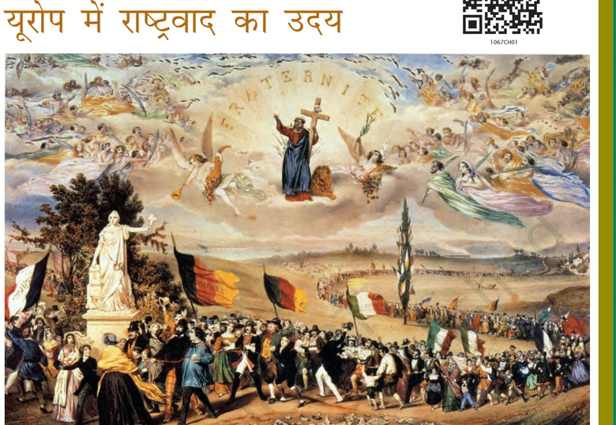
चित्र 1.1 (NCERT): फ़्रेडरिक सरयू (1848) की 'जनतांत्रिक और सामाजिक गणराज्यों' की परिकल्पना (Sorrieu's Vision of Democratic and Social Republics)
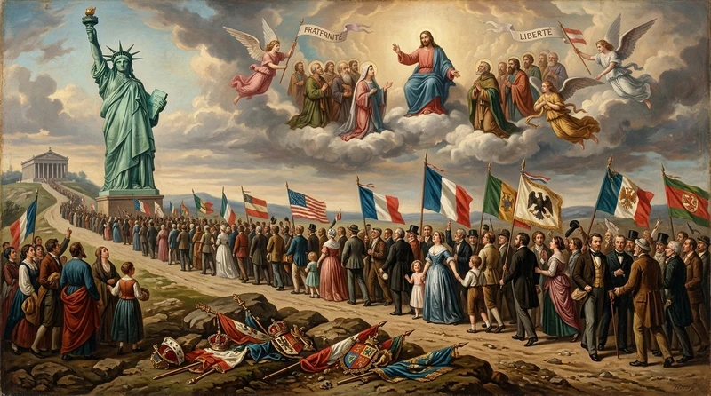
चित्र 1.1 (AI HD Artwork): स्वतंत्रता की देवी के समक्ष यूरोप एवं अमेरिका के नागरिकों का मार्च एवं भ्रातृत्व
1848 में फ्रांस के प्रसिद्ध चित्रकार फ़्रेडरिक सरयू (Frédéric Sorrieu) ने चार चित्रों की एक चित्रमाला रची। इनमें उसने अपने सपनों का एक संसार रचा जो उसके शब्दों में 'जनतांत्रिक और सामाजिक गणराज्यों' से मिलकर बना था।
🔑 मुख्य पारिभाषिक शब्द (Key Terms for Board Exam):
1. निरंकुशवाद (Absolutism): एक ऐसी सरकार या शासन व्यवस्था जिसकी सत्ता पर किसी प्रकार का कोई अंकुश (नियंत्रण) नहीं होता। इतिहास में राजशाही सरकारों को निरंकुश सरकारें कहा जाता है जो अत्यंत केंद्रीकृत, सैन्य बल पर आधारित और दमनकारी होती थीं।
2. यूटोपिया (कल्पनादर्श - Utopia): एक ऐसे समाज की परिकल्पना जो इतना आदर्श है कि उसका साकार होना लगभग असंभव होता है।
3. जनमत संग्रह (Plebiscite): एक प्रत्यक्ष मतदान जिसके जरिए किसी क्षेत्र के सभी नागरिकों से किसी प्रस्ताव को स्वीकार या अस्वीकार करने के लिए पूछा जाता है।
4. राष्ट्र-राज्य (Nation-State): वह राज्य जहाँ बहुसंख्यक नागरिकों और शासकों में एक साझा पहचान और साझा इतिहास का भाव विकसित होता है।
- 1. लंबी कतार में मार्च: यूरोप और अमेरिका के लोग - पुरुष और महिलाएं, सभी उम्र और सभी सामाजिक वर्गों के - एक लंबी कतार में स्वतंत्रता की प्रतिमा की वंदना करते हुए जा रहे हैं।
- 2. स्वतंत्रता की देवी (Statue of Liberty): स्वतंत्रता को एक महिला का रूप दिया गया है। उसके एक हाथ में ज्ञानोदय की मशाल (Torch of Enlightenment) और दूसरे हाथ में मनुष्य के अधिकारों का घोषणापत्र (Charter of the Rights of Man) है।
- 3. निरंकुश संस्थानों के अवशेष: चित्र के अग्रभाग (foreground) में जमीन पर निरंकुश संस्थानों (शाही मुकुट, राजदंड, जंजीरें आदि) के छिन्न-भिन्न अवशेष बिखरे हुए हैं।
- 4. राष्ट्रों का वर्गीकरण: सरयू के कल्पनादर्श में दुनिया के लोगों को उनके राष्ट्रीय झंडों और परिधानों से पहचाना गया है। जुलूस का नेतृत्व संयुक्त राज्य अमेरिका और स्विट्जरलैंड कर रहे हैं, जो तब तक राष्ट्र-राज्य बन चुके थे।
- 5. फ्रांस और जर्मनी: फ्रांस (क्रांतिकारी तिरंगे के साथ) प्रतिमा के पास अभी-अभी पहुंचा है। उसके ठीक पीछे जर्मनी के लोग हैं जो काला, लाल और सुनहरा (Black, Red and Gold) झंडा थामे हुए हैं। (1848 में जर्मन लोग एक संयुक्त राष्ट्र का हिस्सा नहीं बने थे; यह उनकी एकीकरण की आकांक्षा का प्रतीक था)।
- 6. स्वर्ग से आशीर्वाद: ऊपर आसमान से ईसा मसीह, संत और फ़रिश्ते इस दृश्य पर अपनी नज़रें जमाए हुए हैं। चित्रकार ने इनका उपयोग दुनिया के राष्ट्रों के बीच भाईचारे (Fraternity) के प्रतीक के रूप में किया है।
📚 बॉक्स 1: अर्न्स्ट रेनन - 'राष्ट्र क्या है?' (Ernst Renan - What is a Nation?):
फ्रांसीसी दार्शनिक अर्न्स्ट रेनन ने 1882 में सोरबोन विश्वविद्यालय में दिए गए अपने व्याख्यान में कहा: "राष्ट्र एक लंबे प्रयासों, त्याग और निष्ठा का चरम बिंदु होता है। एक विशाल सामूहिक एकता का नाम राष्ट्र है... राष्ट्रों का अस्तित्व स्वतंत्रता की गारंटी है, और यदि दुनिया में केवल एक मालिक होता, तो स्वतंत्रता खो जाती।"
राष्ट्रवाद की पहली स्पष्ट अभिव्यक्ति 1789 की फ्रांसीसी क्रांति के साथ हुई। 1789 में फ्रांस एक ऐसा राज्य था जिसके संपूर्ण भूभाग पर एक निरंकुश राजा (बूर्बों वंश के लुई XVI) का शासन था। फ्रांसीसी क्रांति ने प्रभुसत्ता को राजा के हाथ से निकालकर फ्रांसीसी नागरिकों के समूह को सौंप दिया।
- पितृभूमि (La Patrie) और नागरिक (Le Citoyen): इन विचारों ने एक संयुक्त समुदाय की अवधारणा पर बल दिया जिसे एक संविधान के अंतर्गत समान अधिकार प्राप्त थे।
- नया फ्रांसीसी तिरंगा झंडा (New Tricolour): पूर्व शाही ध्वज का स्थान नया फ्रांसीसी तिरंगे झंडे (नीला, सफेद, लाल) ने ले लिया।
- नेशनल असेंबली (National Assembly): स्टेट्स जनरल का चुनाव सक्रिय नागरिकों द्वारा किया जाने लगा और उसका नाम बदलकर 'नेशनल असेंबली' कर दिया गया।
- नई स्तुतियां एवं शपथ: राष्ट्र के नाम पर नई स्तुतियां रची गईं, शपथें ली गईं और शहीदों का गुणगान हुआ।
- केंद्रीकृत प्रशासनिक व्यवस्था: एक केंद्रीकृत प्रशासनिक व्यवस्था लागू की गई जिसने अपने भूभाग में रहने वाले सभी नागरिकों के लिए एक समान कानून बनाए।
- आंतरिक शुल्क समाप्त एवं समान नाप-तौल: आंतरिक सीमा शुल्क (internal customs duties) समाप्त कर दिए गए और भार व माप की एक समान प्रणाली (Standard System of Weights & Measures) लागू की गई।
- पेरिस की भाषा (मानक फ्रेंच): क्षेत्रीय बोलियों को हतोत्साहित किया गया और पेरिस में बोली जाने वाली फ्रेंच भाषा ही राष्ट्र की साझा भाषा बनी।
🗺️ फ्रांस का ऐतिहासिक मानचित्र
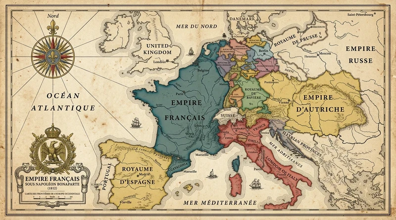
चित्र 2.1 (ऐतिहासिक मानचित्र): नेपोलियन कालीन फ्रांसीसी साम्राज्य (1789-1815) और पड़ोसी यूरोपीय राज्य।
नेपोलियन ने फ्रांस में राजतंत्र वापस लाकर लोकतंत्र को नष्ट कर दिया, लेकिन प्रशासनिक क्षेत्र में उसने क्रांतिकारी सिद्धांतों का समावेश किया ताकि पूरी व्यवस्था अधिक तर्कसंगत और कुशल बन सके। 1804 की नागरिक संहिता (जिसे नेपोलियन की संहिता भी कहा जाता है) के मुख्य प्रावधान निम्नलिखित थे:
- 1. जन्म पर आधारित विशेषाधिकार समाप्त: जन्म पर आधारित विशेषाधिकार समाप्त कर दिए गए।
- 2. कानून के समक्ष समानता: कानून के समक्ष सब की बराबरी और संपत्ति के अधिकार को सुरक्षित बनाया गया।
- 3. सामंती व्यवस्था (Feudal System) का अंत: प्रशासनिक विभाजनों को सरल बनाया गया, सामंती व्यवस्था को समाप्त किया गया और किसानों को भू-दासत्व (serfdom) तथा जागीरदारी शुल्कों से मुक्ति दिलाई।
- 4. श्रेणी-संघों के नियंत्रण समाप्त: शहरों में कारीगरों की श्रेणी-संघों (Guilds) के नियंत्रणों को हटा दिया गया।
- 5. यातायात एवं संचार में सुधार: यातायात और संचार व्यवस्थाओं में सुधार किया गया।
- 6. एक समान मानक मुद्रा: एक राष्ट्रीय मुद्रा और एक समान नाप-तौल की प्रणाली से व्यापारियों और सामान के आवागमन में सुगमता आई।
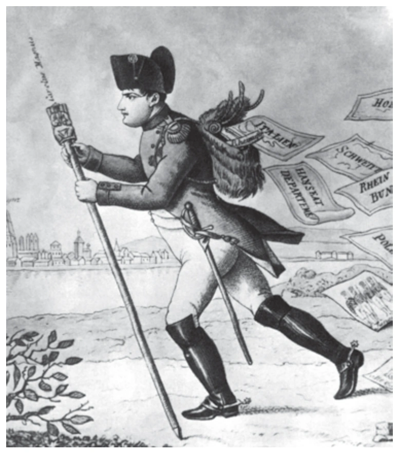
चित्र 1.4 (NCERT): राइनलैंड का डाकिया नेपोलियन - लाइप्सिग के युद्ध में हारकर लौटते हुए उसके थैले से एक-एक करके भूभाग गिर रहे हैं।
⚠️ नेपोलियन के शासन के प्रति विजित क्षेत्रों में मिली-जुली प्रतिक्रिया:
शुरुआत में हॉलैंड, स्विट्जरलैंड, ब्रुसेल्स, माइंस, मिलान और वारसॉ में फ्रांसीसी सेनाओं का 'स्वतंत्रता के दूत' (Harbingers of Liberty) के रूप में स्वागत किया गया। लेकिन शीघ्र ही यह उत्साह दुश्मनी में बदल गया क्योंकि करों में वृद्धि (Taxation), सेंसरशिप (Censorship) और फ्रांसीसी सेना में जबरन भर्ती (Forced Conscription) से प्रशासनिक सुधारों के लाभ राजनीतिक आजादी के सामने छोटे पड़ने लगे।
18वीं सदी के मध्य में यूरोप में वैसे 'राष्ट्र-राज्य' नहीं थे जैसे आज हैं। जर्मनी, इटली और स्विट्जरलैंड तब राजशाहियों, डचियों और कैंटनों में बंटे हुए थे, जिनके शासकों के अपने स्वायत्त क्षेत्र थे।
| क्षेत्र / प्रांत |
निवासी / बोली जाने वाली भाषा |
| ऑस्ट्रिया, टायरॉल, सुडेटेनलैंड, बोहेमिया |
जर्मन भाषा (German speaking) |
| लॉम्बार्डी और वेनेशिया (Lombardy & Venetia) |
इतालवी भाषा (Italian speaking) |
| हंगरी (Hungary) |
आधे लोग मग्यार (Magyar) और बाकी विभिन्न बोलियां बोलते थे |
| गालिसिया (Galicia) |
कुलीन वर्ग पोलिश भाषा (Polish) बोलता था |
- कुलीन वर्ग (Aristocracy): सामाजिक और राजनीतिक रूप से भूस्वामी कुलीन वर्ग यूरोप का सबसे प्रभावशाली वर्ग था। वे फ्रेंच भाषा बोलते थे और उनके परिवार वैवाहिक संबंधों से जुड़े थे। परंतु संख्या की दृष्टि से वे एक छोटा समूह थे।
- किसान वर्ग (Peasantry): यूरोप की बहुसंख्यक आबादी किसानों की थी। पश्चिम में ज्यादातर जमीन पर किराएदार खेती करते थे, जबकि पूर्वी और मध्य यूरोप में विशाल जागीरें थीं।
- नया मध्यम वर्ग (New Middle Class): इंग्लैंड में 18वीं सदी के उत्तरार्ध में और फ्रांस/जर्मनी में 19वीं सदी में औद्योगिकीकरण हुआ। इसके कारण एक नया सामाजिक वर्ग अस्तित्व में आया - उद्योगपति, व्यापारी और पेशेवर। इसी शिक्षित मध्यम वर्ग में राष्ट्रीय एकता के विचारों को लोकप्रियता मिली।
19वीं सदी के शुरुआती यूरोप में राष्ट्रीय एकता के विचार उदारवाद (Liberalism) से गहराई से जुड़े थे। 'उदारवाद' शब्द लैटिन भाषा के मूल 'liber' पर आधारित है, जिसका अर्थ है - आजाद।
📌 उदारवाद के 3 प्रमुख आयाम:
• 1. राजनीतिक क्षेत्र में: व्यक्ति के लिए आजादी, कानून के समक्ष समानता, निरंकुश शासन और पादरी वर्ग के विशेषाधिकारों का अंत, संविधान और प्रतिनिधि संसदीय सरकार।
• 2. मताधिकार का मुद्दा (Suffrage Issue): कानून के समक्ष समानता का अर्थ सभी के लिए मताधिकार नहीं था। फ्रांसीसी क्रांति में केवल संपत्तिधारी पुरुषों को वोट देने का अधिकार था। नेपोलियन कोड ने महिलाओं को 'नाबालिग' का दर्जा देकर पिता और पति के अधीन कर दिया था।
• 3. आर्थिक क्षेत्र में: बाजारों की मुक्ति तथा सामान व पूंजी के आवागमन पर राज्य द्वारा लगाए गए प्रतिबंधों को समाप्त करना।
📚 बॉक्स 2: कार्ल वेल्कर - 'उदारवाद और महिलाओं का स्थान':
1848 में फ्रैंकफर्ट संसद के सदस्य कार्ल वेल्कर ने दलील दी: "प्रकृति ने पुरुषों और महिलाओं को अलग-अलग कार्य करने के लिए बनाया है। पुरुष मजबूत और निडर है जबकि महिला कमजोर और घर की देखभाल करने वाली है।"
नारीवादी विरोध (Louise Otto-Peters): नारीवादी राजनीतिक कार्यकर्ता लुईस ओटो-पिटर्स ने इसका कड़ा विरोध करते हुए लिखा कि पुरुषों द्वारा स्वतंत्रता की बातें करना और महिलाओं को अधिकारों से वंचित रखना सरासर अन्याय है।
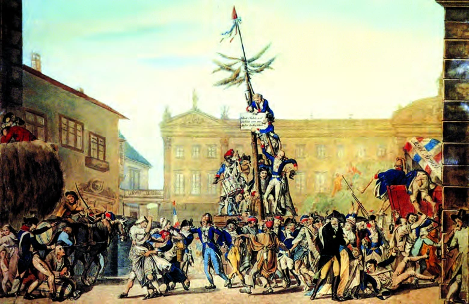
चित्र 1.5 (NCERT): ज्वेब्रुकन (जर्मनी) में स्वतंत्रता के पेड़ का रोपण - फ्रांसीसी सैनिकों द्वारा जर्मन किसानों का शोषण करते हुए।
नेपोलियन के प्रशासनिक कदमों से 39 महासंघों का एक राज्य बना था जिसमें हर राज्य की अपनी मुद्रा और नाप-तौल प्रणाली थी। न्यूरेमबर्ग से हैम्बर्ग जाकर सामान बेचने वाले व्यापारी को 11 सीमा शुल्क नाकों से गुजरना पड़ता था और हर जगह 5% सीमा शुल्क देना पड़ता था।
1834 में प्रशा (Prussia) की पहल पर एक शुल्क संघ 'जोलवेराइन' (Zollverein) स्थापित किया गया जिसमें अधिकांश जर्मन राज्य शामिल हुए।
- शुल्क अवरोधों (Tariff Barriers) को समाप्त कर दिया गया।
- मुद्राओं की संख्या 30 से घटाकर केवल दो (2) कर दी गई।
- रेलवे के नेटवर्क ने गतिशीलता बढ़ाई जिससे आर्थिक हितों को राष्ट्रीय एकीकरण का सहायक बनाया गया।
📚 स्रोत क: फ्रेडरिक लिस्ट (Friedrich List on Zollverein 1834):
ट्यूबिंगन विश्वविद्यालय के अर्थशास्त्र के प्रोफेसर फ्रेडरिक लिस्ट ने 1837 में लिखा: "जोलवेराइन का लक्ष्य जर्मन लोगों को आर्थिक रूप से एक राष्ट्र में बांधना है। यह प्रादेशिक हितों को आपस में जोड़कर राष्ट्रीय भावना को जगाता है।"
1815 में वॉटरलू के युद्ध (Battle of Waterloo) में नेपोलियन की हार के बाद, यूरोपीय सरकारें रूढ़िवाद (Conservatism) की भावना से प्रेरित थीं। रूढ़िवादी मानते थे कि राज्य और समाज की स्थापित पारंपरिक संस्थाएं (जैसे राजतंत्र, चर्च, सामाजिक ऊंच-नीच, संपत्ति और परिवार) को बचाए रखना चाहिए।
1815 में ब्रिटेन, रूस, प्रशा और ऑस्ट्रिया जैसी यूरोपीय शक्तियों ने नेपोलियन को हराने के बाद ऑस्ट्रिया की राजधानी वियना में एक सम्मेलन आयोजित किया। इसकी मेजबानी ऑस्ट्रिया के चांसलर ड्यूक मैटर्निक (Duke Metternich) ने की।
🗺️ वियना कांग्रेस के बाद यूरोप का स्पष्ट पाठ्यपुस्तक मानचित्र (NCERT)
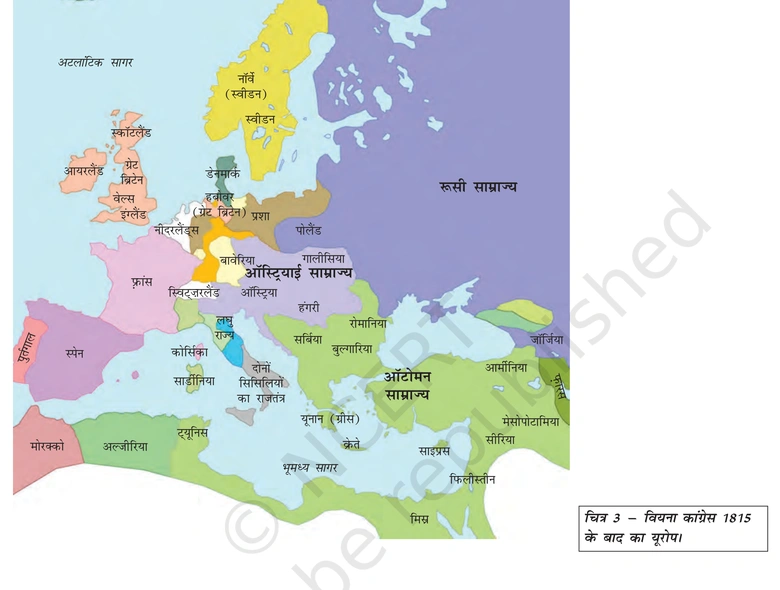
चित्र 1.3 (NCERT): 1815 की वियना कांग्रेस के बाद का यूरोप मानचित्र - सभी पाठ्यपुस्तक नामों (ऑस्ट्रिया, प्रशा, फ्रांस, रूसी साम्राज्य आदि) के साथ।
- 1. बूर्बों वंश की बहाली: फ्रांस में बूर्बों वंश (Bourbon Dynasty) को पुनः सत्ता में बहाल किया गया।
- 2. फ्रांस का प्रादेशिक नियंत्रण समाप्त: फ्रांस ने उन इलाकों को खो दिया जिन पर नेपोलियन ने कब्जा किया था।
- 3. सीमाओं पर राज्यों की स्थापना: उत्तर में नीदरलैंड्स का राज्य स्थापित हुआ (जिसमें बेल्जियम शामिल था); दक्षिण में पीडमॉन्ट में जेनोआ जोड़ा गया; प्रशा को पश्चिमी सीमाओं पर महत्वपूर्ण नए इलाके दिए गए; ऑस्ट्रिया को उत्तरी इटली का नियंत्रण सौंपा गया।
- 4. जर्मन महासंघ यथावत: नेपोलियन द्वारा बनाए गए 39 राज्यों के जर्मन महासंघ को छुए बिना छोड़ दिया गया।
- 5. रूस और प्रशा को क्षेत्र: रूस को पोलैंड का एक हिस्सा दिया गया, जबकि प्रशा को सैक्सनी का एक भाग मिला।
1815 के बाद के वर्षों में दमन के भय से कई उदारवादी-राष्ट्रवादी भूमिगत हो गए। उन्होंने गुप्त संगठन बनाए जिनका उद्देश्य वियना संधि द्वारा स्थापित राजशाही व्यवस्था का विरोध करना और स्वतंत्रता के लिए लड़ना था।
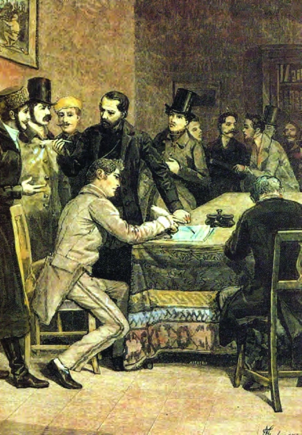
चित्र 1.2 (NCERT): ज्यूसेपे मैजिनी (1807-1872) का मूल चित्र (NCERT पेज 12)।
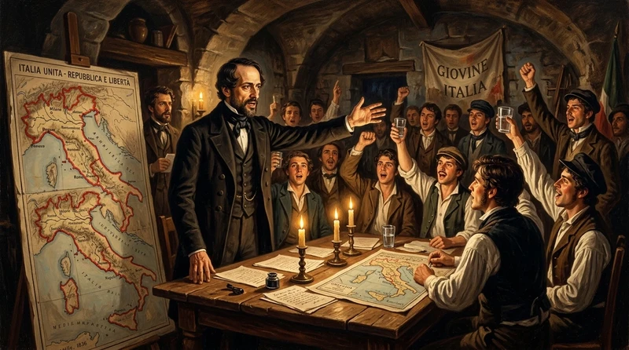
चित्र 1.2 (AI HD Artwork): ज्यूसेपे मैजिनी और 1831 में मार्सेई में 'यंग इटली' (Young Italy) गुप्त समाज की स्थापना।
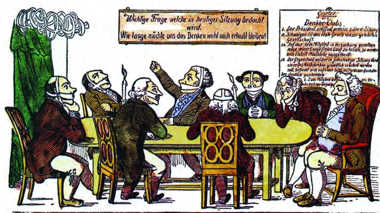
चित्र 1.6 (NCERT): विचारकों का क्लब (The Club of Thinkers) - 1820 के आसपास बना व्यंग्यचित्र जिसमें मुँह पर पट्टियाँ बंधी हैं जो सेंसरशिप का प्रतीक है।
👤 ज्यूसेपे मैजिनी (Giuseppe Mazzini):
• इटली का महान क्रांतिकारी, जिनका जन्म 1807 में जेनोआ में हुआ था।
• वे कार्बोनारी (Carbonari) के गुप्त संगठन के सदस्य बने। 24 साल की उम्र में लिगुरिया में क्रांति करने के प्रयास के लिए उन्हें निर्वासित कर दिया गया।
• उन्होंने दो भूमिगत संगठनों की स्थापना की:
1. यंग इटली (Young Italy) - मार्सेई में।
2. यंग यूरोप (Young Europe) - बर्न में (जिसके सदस्य पोलैंड, फ्रांस, इटली और जर्मन राज्यों के समान विचार वाले युवा थे)।
• मैजिनी का विश्वास था कि "ईश्वर की मर्जी के अनुसार राष्ट्र ही मनुष्यों की प्राकृतिक इकाई थे।" इसलिए इटली छोटे राज्यों का पैचवर्क नहीं रह सकता था।
• मैटर्निक का प्रसिद्ध कथन: ऑस्ट्रिया के चांसलर मैटर्निक ने मैजिनी के बारे में कहा था - "वह हमारी सामाजिक व्यवस्था का सबसे खतरनाक दुश्मन है।" (He is the most dangerous enemy of our social order).
पहला उपद्रव जुलाई 1830 में फ्रांस में हुआ। बूर्बों राजाओं को उदारवादी क्रांतिकारियों ने उखाड़ फेंका और एक संवैधानिक राजतंत्र स्थापित किया, जिसका अध्यक्ष लुई फिलिप (Louis-Philippe) को बनाया गया।
💬 मैटर्निक की प्रसिद्ध टिप्पणी: "जब फ्रांस छींकता है तो बाकी यूरोप को जुकाम हो जाता है।" ("When France sneezes, the rest of Europe catches cold.")
जुलाई क्रांति से ब्रुसेल्स में भी विद्रोह भड़क उठा जिसके फलस्वरूप नीदरलैंड्स के यूनाइटेड किंगडम से बेल्जियम अलग हो गया।
- यूनान 15वीं सदी से ऑटोमन साम्राज्य (Ottoman Empire) का हिस्सा था।
- यूनानियों को पश्चिमी यूरोपीय देशों के लोगों का समर्थन मिला जो प्राचीन यूनानी संस्कृति (Greek Culture - Cradle of European Civilisation) के प्रति गहरी सहानुभूति रखते थे।
- अंग्रेज कवि लॉर्ड बायरन (Lord Byron) ने धन इकट्ठा किया और बाद में युद्ध में लड़ने गए, जहाँ 1824 में बुखार से उनकी मृत्यु हो गई।
- अंततः 1832 की कुस्तुनतुनिया की संधि (Treaty of Constantinople of 1832) ने यूनान को एक स्वतंत्र राष्ट्र के रूप में मान्यता दी।
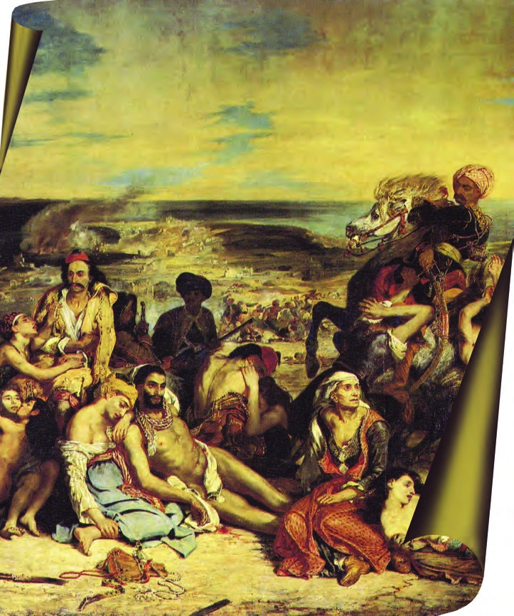
चित्र 1.7 (NCERT): किओस का जनसंहार (The Massacre at Chios) - फ्रेंच चित्रकार यूजीन देलाक्रा (1824) द्वारा चित्रित यूनानी संघर्ष का दर्दनाक दृश्य।
राष्ट्रवाद का विकास केवल युद्धों और क्षेत्रीय विस्तार से नहीं हुआ। कला, काव्य, कहानियों और संगीत ने सांस्कृतिक अभिव्यक्ति के माध्यम से राष्ट्रवाद को गढ़ने में भूमिका निभाई। रूमानीवाद (Romanticism) एक ऐसा सांस्कृतिक आंदोलन था जो एक खास तरह की राष्ट्रीय भावना का विकास करना चाहता था।
🎭 रूमानीवाद के प्रमुख उदाहरण:
1. योहान गॉटफ्रीड हरडर (Johann Gottfried Herder): जर्मन दार्शनिक ने दावा किया कि सच्ची जर्मन संस्कृति आम लोगों (das volk) में निहित थी। लोकगीत, लोककविता और लोकनृत्यों द्वारा राष्ट्र की सच्ची आत्मा (volksgeist) प्रकट होती थी।
2. पोलैंड में संगीत और भाषा: पोलैंड का रूस, प्रूशिया और ऑस्ट्रिया द्वारा विभाजन कर दिया गया था, फिर भी संगीत और भाषा के जरिए राष्ट्रीय भावना जीवित रखी गई। कैरोल कुर्पिंस्की (Karol Kurpinski) ने अपने ओपेरा और संगीत से राष्ट्रीय संघर्ष का गुणगान किया और पोलोनेज़ व माज़ुरका लोकनृत्यों को राष्ट्रीय प्रतीकों में बदल दिया।
3. भाषा का हथियार: रूसी कब्जे के बाद पोलैंड के स्कूलों से पोलिश भाषा को हटाकर रूसी भाषा थोपी गई। 1831 में एक सशस्त्र विद्रोह के बाद, पादरियों ने धार्मिक शिक्षा में पोलिश भाषा का प्रयोग जारी रखा। परिणाम स्वरूप कई पादरियों को साइबेरिया की जेलों में भेज दिया गया।
- 1840 का दशक यूरोप में भारी कठिनाइयों का था। जनसंख्या वृद्धि, ग्रामीण इलाकों से शहरों की ओर पलायन और मशीन से बने सस्ते कपड़ों से प्रतिस्पर्धा के कारण बेरोजगारी फैली।
- 1845 का सिलेशियाई बुनकरों का विद्रोह: बुनकरों ने उन ठेकेदारों के खिलाफ विद्रोह कर दिया जो उन्हें कच्चा माल देकर बहुत कम मजदूरी देते थे। 4 जून को बुनकरों की भीड़ ने ठेकेदार की कोठी पर हमला किया।
- 1848 की पेरिस क्रांति: खाने की कमी और बेरोजगारी के कारण पेरिस की जनता सड़कों पर उतर आई। जगह-जगह अवरोध लगाए गए और लुई फिलिप को भागने पर मजबूर होना पड़ा। नेशनल असेंबली ने एक गणराज्य (Republic) की घोषणा की और 21 वर्ष से ऊपर के सभी वयस्क पुरुषों को मताधिकार तथा काम के अधिकार की गारंटी दी।
📚 स्रोत ख: 1845 के सिलेशियाई बुनकरों का विद्रोह (पत्रकार विल्हेल्म वोल्फ की रिपोर्ट):
पत्रकार विल्हेल्म वोल्फ ने पीटर्सवाल्डौ गाँव की स्थिति का वर्णन किया: "4 जून की दोपहर बुनकरों की भीड़ ठेकेदार की कोठी में घुस गई। उन्होंने खिड़कियों, फर्नीचर और स्टोर रूम में रखी सूती वस्तुओं को तहस-नहस कर दिया। ठेकेदार का परिवार पड़ोसी गाँव भाग गया।"
1848 में जहाँ गरीब भुखमरी से जूझ रहे थे, वहीं शिक्षित मध्यम वर्ग की एक क्रांति भी हो रही थी। जर्मन इलाकों में बड़ी संख्या में राजनीतिक संगठनों ने फ्रैंकफर्ट शहर में एकत्र होकर एक सर्व-जर्मन नेशनल असेंबली के पक्ष में मतदान करने का फैसला किया।
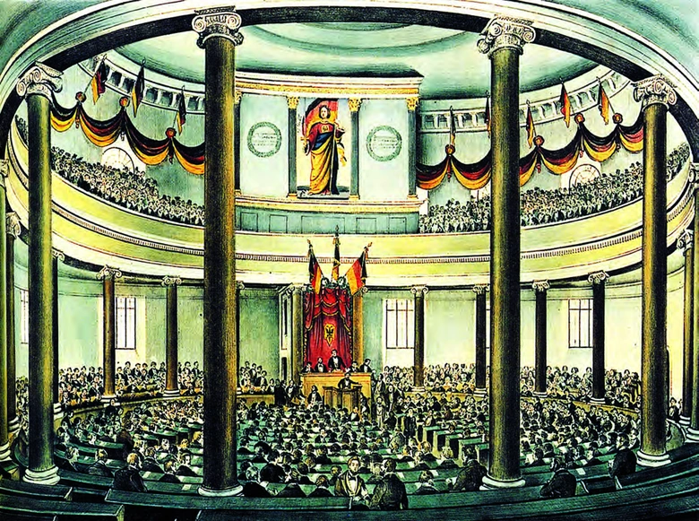
चित्र 1.11 (NCERT): सेंट पॉल चर्च में फ्रैंकफर्ट संसद (Frankfurt Parliament 1848) - ऊपर दर्शक दीर्घा में खड़ी महिलाएं।
- 18 मई 1848: 831 निर्वाचित प्रतिनिधियों ने एक सजे-धजे जुलूस में जाकर सेंट पॉल चर्च (Church of St. Paul) में आयोजित फ्रैंकफर्ट संसद में अपना स्थान ग्रहण किया।
- उन्होंने एक जर्मन राष्ट्र के लिए एक संविधान का प्रारूप तैयार किया। इस राष्ट्र का अध्यक्ष एक राजा को बनाया जाना था जिसे संसद के अधीन रहना था।
- जब प्रतिनिधियों ने प्रशा के राजा फ़्रेडरिक विल्हेम चतुर्थ (King Friedrich Wilhelm IV) को यह ताज पहनाना चाहा, तो उसने इसे अस्वीकार कर दिया और उन राजाओं का साथ दिया जो निर्वाचित सभा के विरोधी थे।
- संसद का सामाजिक आधार: संसद में मध्यम वर्ग का प्रभाव अधिक था जिन्होंने मजदूरों और कारीगरों की मांगों का विरोध किया, जिससे उनका समर्थन समाप्त हो गया और अंततः सेना को बुलाकर संसद को भंग कर दिया गया।
- महिलाओं का स्थान: उदारवादी आंदोलन में महिलाओं ने वर्षों से सक्रिय भाग लिया था। उन्होंने अपने राजनीतिक संगठन बनाए, अखबार शुरू किए और प्रदर्शन किए। इसके बावजूद उन्हें संसद के चुनाव में वोट देने का अधिकार नहीं मिला; उन्हें केवल सेंट पॉल चर्च की दर्शक दीर्घा (Visitor's Gallery) में प्रेक्षक के रूप में खड़े होने की अनुमति दी गई।
1848 के बाद यूरोप में राष्ट्रवाद का जनतंत्र और क्रांति से अलगाव होने लगा। राजसत्ता को मजबूत करने के लिए रूढ़िवादियों ने राष्ट्रीय भावनाओं का इस्तेमाल किया। प्रशा ने जर्मन एकीकरण के आंदोलन का नेतृत्व संभाला।
🗺️ जर्मनी के एकीकरण का मानचित्र
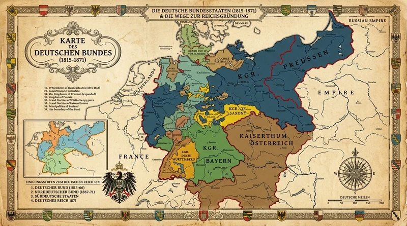
चित्र 6.1 (ऐतिहासिक मानचित्र): जर्मन महासंघ (39 राज्य) तथा प्रशा द्वारा एकीकरण की ऐतिहासिक प्रक्रिया।
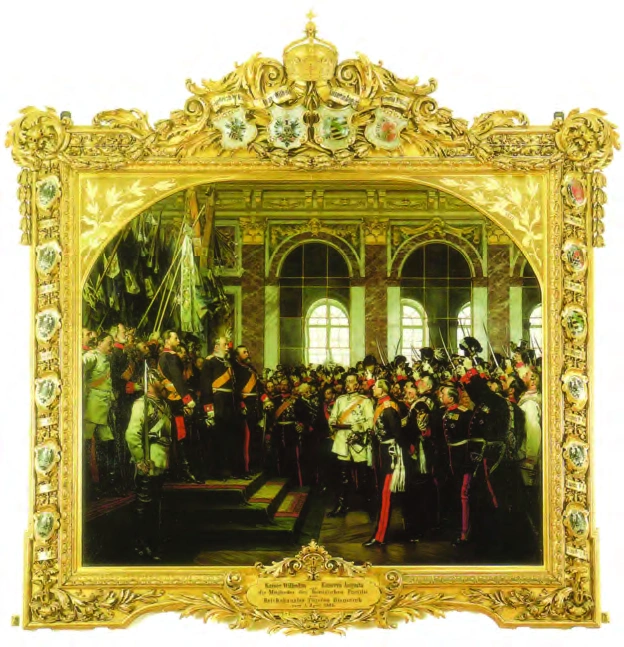
चित्र 1.12 (NCERT): 18 जनवरी 1871 को वर्साय के शीशमहल (Hall of Mirrors) में जर्मन साम्राज्य की घोषणा।
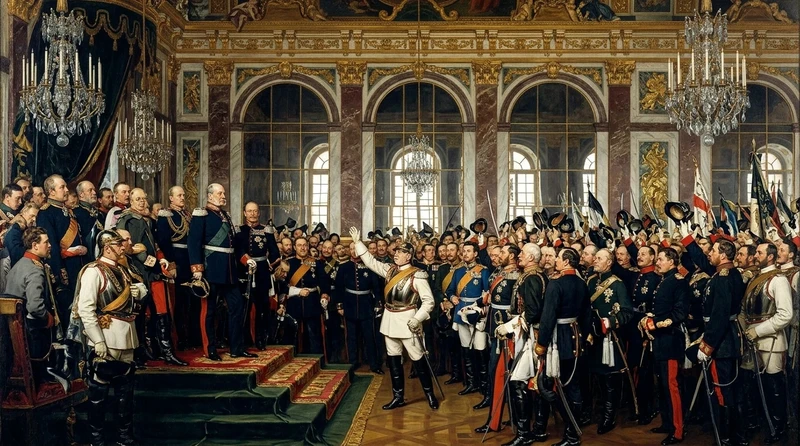
चित्र 1.12 (AI HD Artwork): वर्साय के शीशमहल में बिस्मार्क एवं कैसर विलियम प्रथम का राज्याभिषेक।
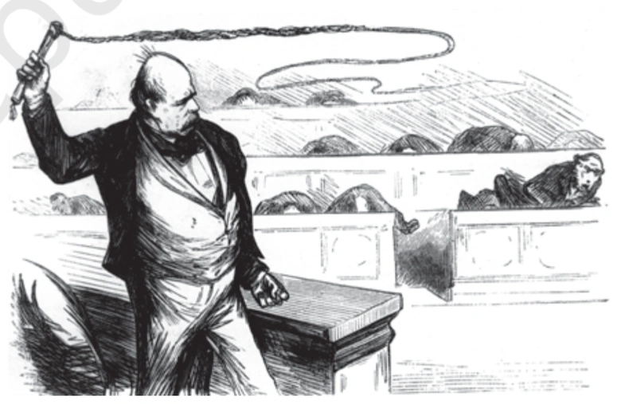
चित्र 1.13 (NCERT): जर्मन संसद (Reichstag) में चाबुक थामे ऑटो वोन बिस्मार्क का व्यंग्यचित्र।
⚔️ ऑटो वोन बिस्मार्क और जर्मनी का एकीकरण:
• आर्किटेक्ट: प्रशा का प्रमुख मंत्री (Chief Minister) ऑटो वोन बिस्मार्क (Otto von Bismarck) इस प्रक्रिया का जनक था जिसने प्रशा की सेना और नौकरशाही की मदद ली।
• रक्त और लोहे की नीति (Blood and Iron Policy): बिस्मार्क ने एकीकरण हेतु सैन्य बल और कूटनीति का प्रयोग किया।
• तीन युद्ध (7 वर्षों में): ऑस्ट्रिया, डेनमार्क और फ्रांस के खिलाफ सात वर्षों के दौरान तीन युद्ध हुए जिनमें प्रशा की जीत हुई और एकीकरण की प्रक्रिया पूरी हुई।
• 18 जनवरी 1871: वर्साय के महल के बेहद ठंडे 'शीशमहल' (Hall of Mirrors) में जर्मन राज्यों के राजकुमारों, सेना के प्रतिनिधियों और बिस्मार्क की उपस्थिति में प्रशा के राजा विलियम प्रथम (Kaiser Wilhelm I) को नए जर्मन साम्राज्य का सम्राट घोषित किया गया।
• नए जर्मन राज्य ने मुद्रा, बैंकिंग, कानूनी और न्यायिक प्रणालियों के आधुनिकीकरण पर जोर दिया।
19वीं सदी के मध्य में इटली सात (7) राज्यों में बंटा हुआ था। इनमें से केवल एक राज्य - सार्डिनिया-पीडमॉन्ट (Sardinia-Piedmont) पर इतालवी राजघराने का शासन था।
| क्षेत्र / राज्य |
शासक / नियंत्रण |
| उत्तरी इटली (North Italy) |
ऑस्ट्रियाई हैब्सबर्ग वंश के अधीन |
| मध्य इटली (Central Italy) |
पॉप (Pope) का शासन |
| दक्षिणी इटली (South Italy - Two Sicilies) |
स्पेन के बूर्बों राजाओं के अधीन |
| सार्डिनिया-पीडमॉन्ट |
इतालवी राजा विक्टर इमेन्यूएल द्वितीय |
🗺️ इटली के एकीकरण पूर्व राज्यों का मानचित्र
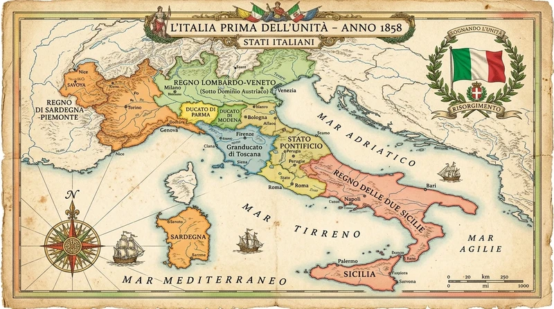
चित्र 6.2 (ऐतिहासिक मानचित्र): 1858 में इटली के 7 राज्य (सार्डिनिया-पीडमॉन्ट, दो सिचलियों का राज्य, पोप का राज्य आदि)।
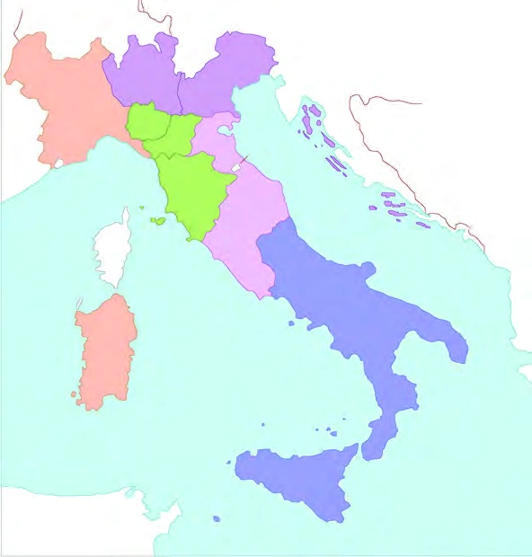
चित्र 1.15 (NCERT): इतालवी राज्यों का एकीकरण (1858-1870)।
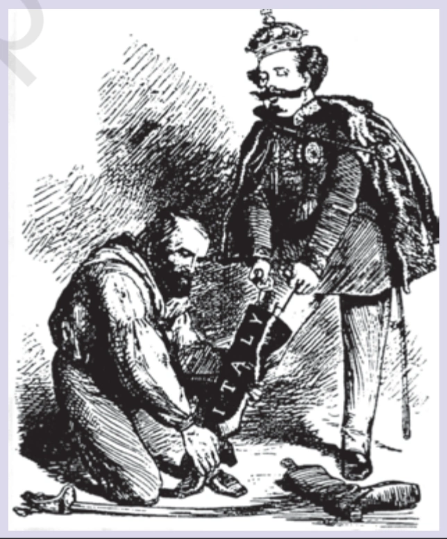
चित्र 1.14 (NCERT): ज्यूसेपे गैरीबाल्डी राजा विक्टर इमेन्यूएल द्वितीय को 'इटली का बूट' पहनाने में मदद करते हुए।
- ज्यूसेपे मैजिनी (Giuseppe Mazzini): 1830 के दशक में 'यंग इटली' के जरिए वैचारिक आधार तैयार किया।
- काउंट कावूर (Count Cavour): सार्डिनिया-पीडमॉन्ट का मुख्य मंत्री कावूर ना तो क्रांतिकारी था और ना ही जनतंत्रवादी। उसने फ्रांस के साथ एक चतुर कूटनीतिक संधि की और 1859 में ऑस्ट्रियाई बलों को हरा दिया।
- ज्यूसेपे गैरीबाल्डी (Giuseppe Garibaldi): गैरीबाल्डी ने 'रेड शर्ट्स' (लाल कुर्ती) नामक सशस्त्र स्वयंसेवकों का नेतृत्व किया। 1860 में वे दक्षिण इटली और दो सिचलियों के राज्य में प्रवेश कर गए और स्पेनिश शासकों को हटाने के लिए स्थानीय किसानों का समर्थन हासिल किया।
1861 में विक्टर इमेन्यूएल द्वितीय (Victor Emmanuel II) को एकीकृत इटली का राजा घोषित किया गया। (रोम 1870 में अंतिम राज्य के रूप में इटली में शामिल हुआ)।
ब्रिटेन में राष्ट्र-राज्य का निर्माण किसी अचानक हुई क्रांति का परिणाम नहीं था, बल्कि यह एक लंबी चलने वाली राजनीतिक प्रक्रिया का परिणाम था। 18वीं सदी से पहले कोई 'ब्रिटिश राष्ट्र' नहीं था। ब्रिटिश द्वीपसमूह में रहने वाले लोगों की मुख्य पहचान आंग्ल (English), वेल्श (Welsh), स्कॉट (Scot) या आयरिश (Irish) थी।
🗺️ ग्रेट ब्रिटेन और यूनाइटेड किंगडम का मानचित्र
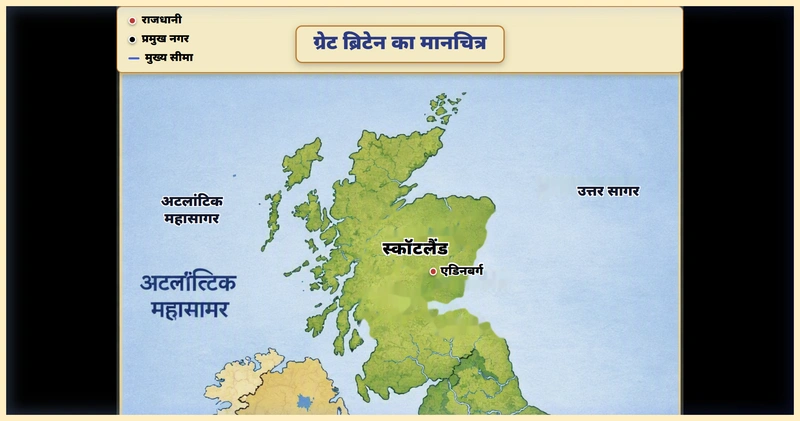
चित्र 6.3 (ऐतिहासिक मानचित्र): ग्रेट ब्रिटेन (इंग्लैंड, स्कॉटलैंड, वेल्स) एवं आयरलैंड का विलय और यूनाइटेड किंगडम की स्थापना।
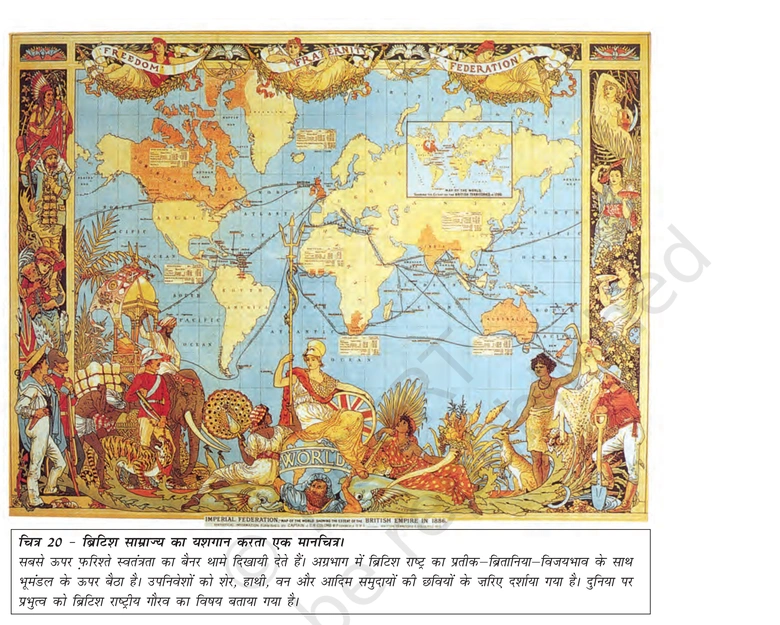
चित्र 1.20 (NCERT): ब्रिटिश साम्राज्य का उत्सव मनाता मानचित्र - ऊपर स्वतंत्रता के दूत और अग्रभाग में ब्रिटैनिया की छवि।
- 1688 की क्रांति: आंग्ल राष्ट्र ने अपनी धन-दौलत और सत्ता में वृद्धि की और 1688 में संसद ने राजतंत्र से सत्ता छीन ली।
- 1707 का एक्ट ऑफ यूनियन (Act of Union 1707): इंग्लैंड और स्कॉटलैंड के बीच 'एक्ट ऑफ यूनियन' से 'यूनाइटेड किंगडम ऑफ ग्रेट ब्रिटेन' का गठन हुआ। इसके तहत इंग्लैंड स्कॉटलैंड पर अपना प्रभाव जमाने में सफल रहा। स्कॉटिश हाइलैंड्स के कैथोलिक लोगों को अपनी गैलिक भाषा बोलने और राष्ट्रीय पोशाक पहनने से रोका गया।
- आयरलैंड का विलय (1801): आयरलैंड कैथोलिक और प्रोटेस्टेंट गुटों में बंटा था। अंग्रेजों ने प्रोटेस्टेंटों की मदद की। वुल्फ टोन (Wolfe Tone) और उसकी 'यूनाइटेड आयरिशमेन' (1798) के विद्रोह को कुचलकर 1801 में आयरलैंड को जबरन यूनाइटेड किंगडम में शामिल कर लिया गया।
- ब्रिटिश प्रतीक: नए 'ब्रिटिश राष्ट्र' का निर्माण किया गया जिसके मुख्य प्रतीक थे - ब्रिटिश झंडा (यूनियन जैक - Union Jack), राष्ट्रीय गान (God Save Our Noble King) और अंग्रेजी भाषा।
18वीं और 19वीं सदी में कलाकारों ने राष्ट्र का मानवीयकरण किया। उन्होंने राष्ट्रों को एक महिला के रूप में चित्रित किया। राष्ट्र के इस रूपक को 'एलेगरी' (Allegory - रूपक) कहा जाता है।
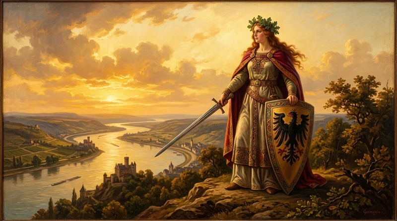
चित्र 1.4 (AI HD Artwork): जर्मनी की राष्ट्रीय रूपक 'जर्मेनिया' (Germania Guarding the Rhine) और फ्रांस की 'मारियान' (Marianne)
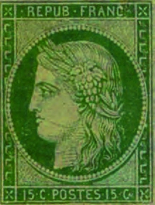
चित्र 1.16 (NCERT): 1850 के फ्रांसीसी डाक टिकट पर मारियान की छवि जो गणतंत्र का प्रतीक है।
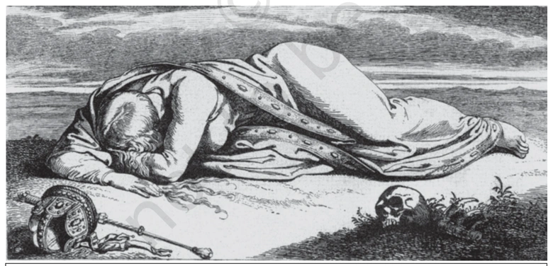
चित्र 1.17 (NCERT): धराशायी जर्मेनिया (The Fallen Germania 1850) - यूलियस ह्यूबनर द्वारा फ्रैंकफर्ट संसद की नाकामी पर दुख जताता चित्र।
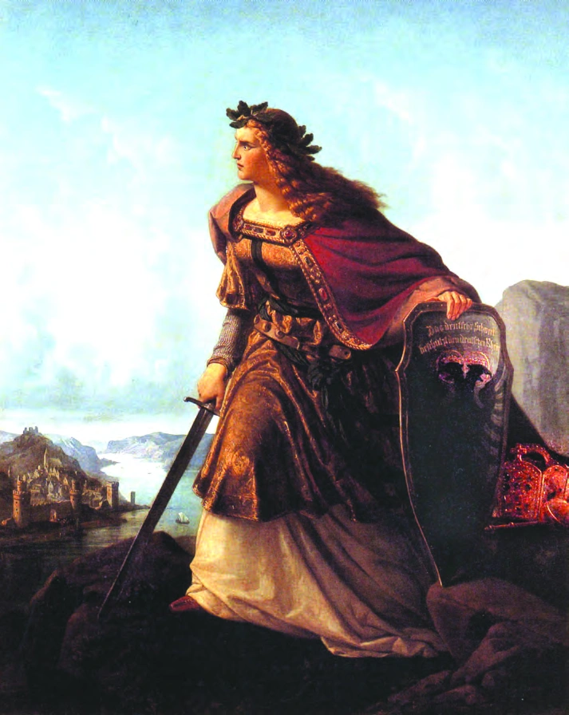
चित्र 1.19 (NCERT): राइन नदी पर पहरा देती जर्मेनिया (Germania Guarding the Rhine 1860 - लॉरेंज क्लासेन)।
🇫🇷 मारियान (Marianne - फ्रांस):
• फ्रांस में राष्ट्र रूपक को 'मारियान' नाम दिया गया जो एक लोकप्रिय ईसाई नाम था।
• उसके प्रतीक स्वतंत्रता और गणतंत्र के थे - लाल टोपी (Red Cap), तिरंगा (Tricolour) और कलग़ी (Cockade)।
• मारियान की प्रतिमाएं सार्वजनिक चौराहों पर लगाई गईं ताकि जनता को राष्ट्रीय एकता की याद दिलाए जा सके। उसकी छवियां डाक टिकटों और सिक्कों पर भी छापी गईं।
🇩🇪 जर्मेनिया (Germania - जर्मनी):
• जर्मेनिया जर्मन राष्ट्र का रूपक बनी।
• दृश्य अभिव्यक्ति में वह शाहबलूत (बलूत/Oak) के पत्तों का मुकुट पहनती है, क्योंकि जर्मन बलूत वीरता (Heroism) का प्रतीक है।
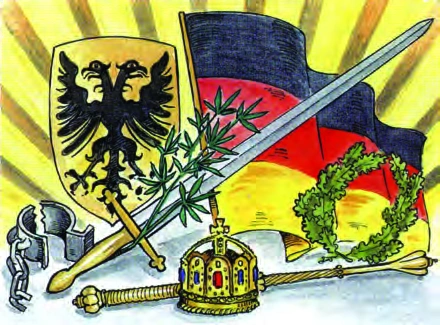
चित्र 1.18 (NCERT): बॉक्स 3 - प्रतीकों के अर्थ (टूटी हुई जंजीरें, बाज छाप वक्षवस्त्र, जैतून की डाली, बलूत मुकुट आदि)।
| प्रतीक (Symbol) |
अर्थ (Significance / Meaning) |
| टूटी हुई जंजीरें (Broken Chains) |
आजादी मिलना (Being freed) |
| बाज छाप वाला वक्षवस्त्र (Breastplate with Eagle) |
जर्मन साम्राज्य की प्रतीक शक्ति (Symbol of German Empire's Strength) |
| बलूत पत्तों का मुकुट (Crown of Oak Leaves) |
वीरता (Heroism) |
| तलवार (Sword) |
मुकाबले की तैयारी (Readiness to fight) |
| तलवार पर लपेटी हुई जैतून की डाली (Olive branch around sword) |
शांति की चाह (Willingness to make peace) |
| काला, लाल और सुनहरा तिरंगा (Black, Red & Gold Tricolour) |
1848 के उदारवादी राष्ट्रवादियों का झंडा |
| उगते सूर्य की किरणें (Rays of the Rising Sun) |
एक नए युग का सूत्रपात (Beginning of a new era) |
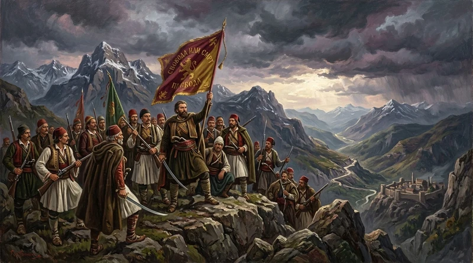
चित्र 1.5 (AI HD Artwork): 19वीं सदी के उत्तरार्ध में बालकन प्रायद्वीप में राष्ट्रवादी तनाव एवं जनसंघर्ष (The Balkan Crisis)
🗺️ बालकन क्षेत्र एवं यूरोपीय साम्राज्यवाद का मानचित्र
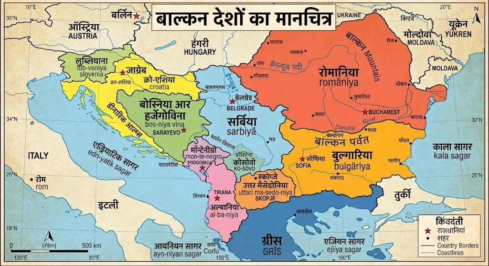
चित्र 8.1 (NCERT): बालकन क्षेत्र की भौगोलिक एवं जातीय विविधता तथा ऑटोमन विघटन मानचित्र।
19वीं सदी के अंतिम चौथाई तक राष्ट्रवाद का वह उदारवादी लोकतांत्रिक स्वभाव नहीं रहा जो सदी के प्रथमाध में था। अब राष्ट्रवाद संकीर्ण विचारों वाला बन गया। 1871 के बाद यूरोप में गंभीर राष्ट्रवादी तनाव का क्षेत्र बालकन (Balkan Region) था।
🌍 बालकन संकट की प्रमुख विशेषताएं:
1. भौगोलिक व जातीय विविधता: बालकन क्षेत्र में आधुनिक रोमानिया, बुल्गारिया, अल्बानिया, ग्रीस, मैसिडोनिया, क्रोएशिया, बोस्निया-हर्जेगोविना, स्लोवेनिया, सर्बिया और मोंटेनेग्रो शामिल थे। यहाँ के निवासियों को आमतौर पर 'स्लाव' (Slavs) कहा जाता था।
2. ऑटोमन साम्राज्य का विघटन: बालकन का एक बड़ा हिस्सा ऑटोमन साम्राज्य के नियंत्रण में था। 19वीं सदी में ऑटोमन साम्राज्य ने आधुनिकीकरण से खुद को मजबूत बनाना चाहा परंतु वह असफल रहा और उसके अधीन एक-एक करके यूरोपीय विषय राष्ट्र स्वतंत्र होते गए।
3. आपसी प्रतिस्पर्धा: बालकन राज्य एक-दूसरे से भारी ईर्ष्या करते थे और हर एक राज्य अपने लिए ज्यादा से ज्यादा इलाका हथियाने की उम्मीद रखता था।
4. यूरोपीय महाशक्तियों की प्रतिद्वंद्विता (Big Power Rivalry): स्थिति तब और गंभीर हो गई जब बालकन में बड़ी शक्तियों - रूस, जर्मनी, इंग्लैंड और ऑस्ट्रिया-हंगरी के बीच व्यापार, नौसैनिक शक्ति और उपनिवेशों पर नियंत्रण को लेकर प्रतिस्पर्धा शुरू हुई।
5. प्रथम विश्व युद्ध का कारण: इन प्रतिस्पर्धाओं के कारण बालकन क्षेत्र में कई युद्ध हुए और अंततः 1914 में प्रथम विश्व युद्ध (First World War) की शुरुआत हुई।
🎯 महत्वपूर्ण तिथियां एवं तथ्य (Golden Timeline for Board Exams)
- 1789: फ्रांसीसी क्रांति की शुरुआत (Start of French Revolution).
- 1804: नेपोलियन की नागरिक संहिता (Napoleonic Code).
- 1815: वॉटरलू का युद्ध और वियना की संधि (Battle of Waterloo & Treaty of Vienna).
- 1821: यूनान के स्वतंत्रता संग्राम की शुरुआत (Greek War of Independence).
- 1831: ज्यूसेपे मैजिनी द्वारा 'यंग इटली' की स्थापना (Young Italy by Mazzini).
- 1832: कुस्तुनतुनिया की संधि द्वारा यूनान स्वतंत्र (Treaty of Constantinople).
- 1834: जोलवेराइन शुल्क संघ की स्थापना (Zollverein Customs Union).
- 1848: फ्रैंकफर्ट संसद एवं फ्रांस में द्वितीय गणराज्य (Frankfurt Parliament).
- 1859-1870: इटली का एकीकरण (Unification of Italy).
- 1866-1871: जर्मनी का एकीकरण (Unification of Germany - Bismarck).
- 1871 (18 जनवरी): वर्साय के शीशमहल में जर्मन साम्राज्य की घोषणा (Wilhelm I).
- 1914: बालकन संकट के कारण प्रथम विश्व युद्ध की शुरुआत (World War I).